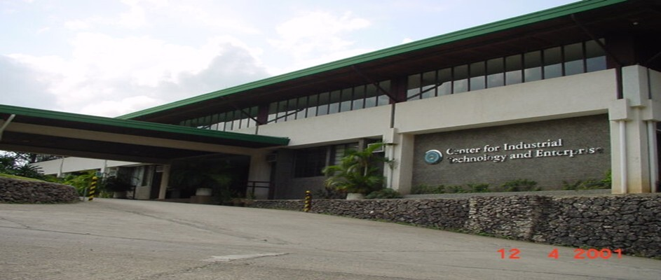
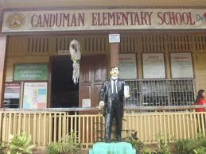

Education

This year, I study in CITE, and I’m embracing every opportunity to learn, grow, and push myself beyond what I thought was possible.

From 2016 to 2023, I studied at Canduman National High School, where I faced challenges, built resilience, and laid the foundation for a future full of possibilities.

From 2011 to 2015, I studied at Canduman Elementary School, where I first discovered the power of curiosity, hard work, and the importance of believing in myself.